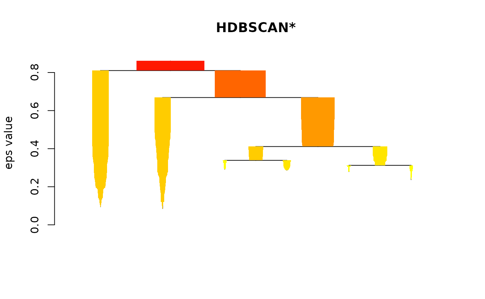
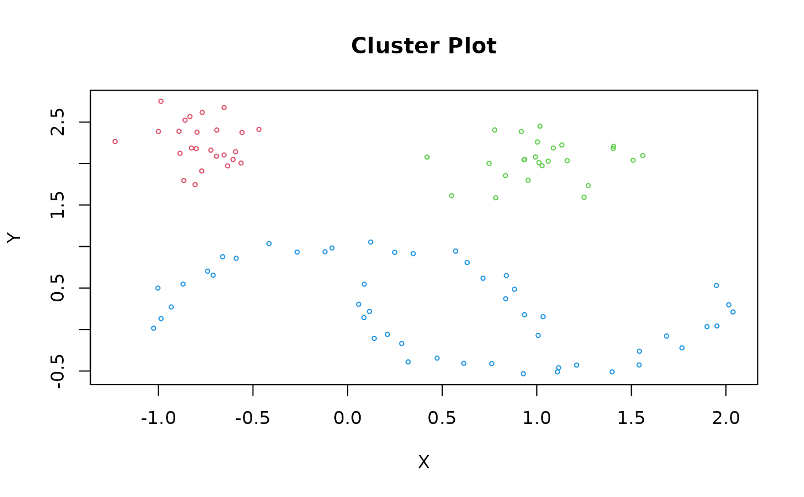
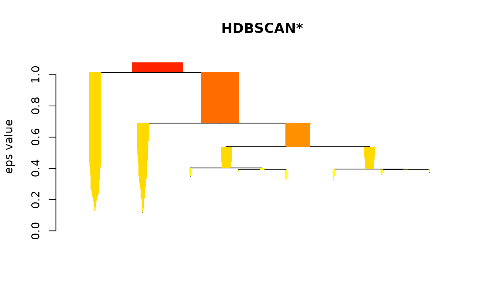
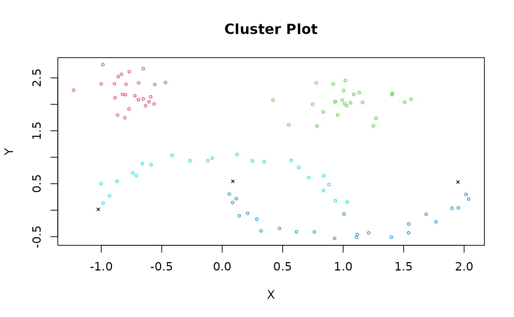
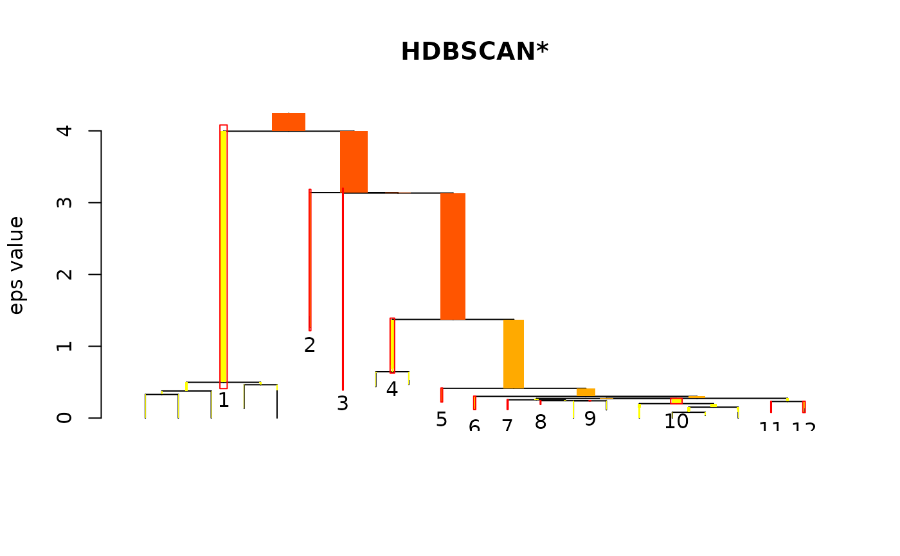
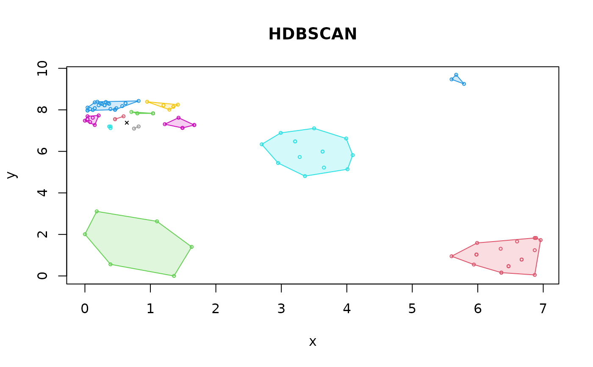
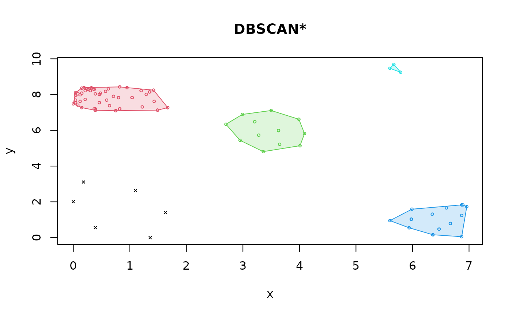
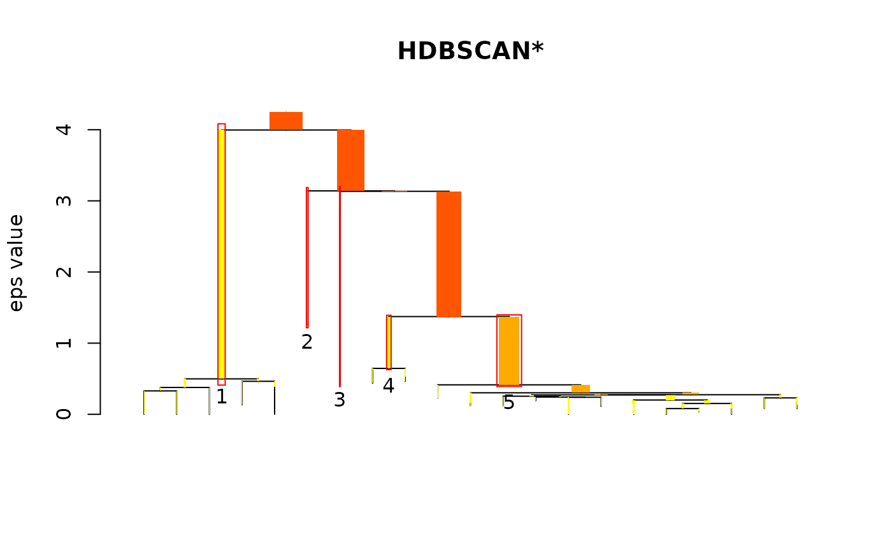
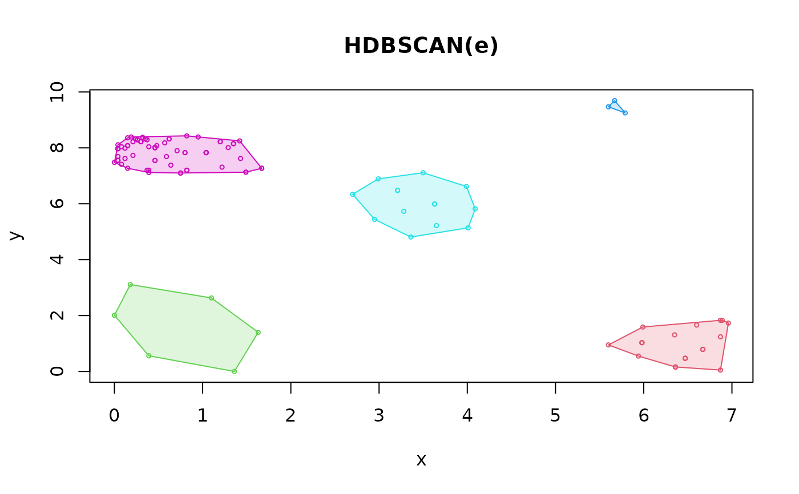

Fast C++ implementation of the HDBSCAN (Hierarchical DBSCAN) and its related algorithms.
Usage
hdbscan(
x,
minPts,
cluster_selection_epsilon = 0,
gen_hdbscan_tree = FALSE,
gen_simplified_tree = FALSE,
verbose = FALSE
)
# S3 method for class 'hdbscan'
print(x, ...)
# S3 method for class 'hdbscan'
plot(
x,
scale = "suggest",
gradient = c("yellow", "red"),
show_flat = FALSE,
main = "HDBSCAN*",
ylab = "eps value",
leaflab = "none",
...
)
coredist(x, minPts)
mrdist(x, minPts, coredist = NULL)
# S3 method for class 'hdbscan'
predict(object, newdata, data, ...)Arguments
- x
a data matrix (Euclidean distances are used) or a dist object calculated with an arbitrary distance metric.
- minPts
integer; Minimum size of clusters. See details.
- cluster_selection_epsilon
double; a distance threshold below which
- gen_hdbscan_tree
logical; should the robust single linkage tree be explicitly computed (see cluster tree in Chaudhuri et al, 2010).
- gen_simplified_tree
logical; should the simplified hierarchy be explicitly computed (see Campello et al, 2013).
- verbose
report progress.
- ...
additional arguments are passed on.
- scale
integer; used to scale condensed tree based on the graphics device. Lower scale results in wider colored trees lines. The default
'suggest'sets scale to the number of clusters.- gradient
character vector; the colors to build the condensed tree coloring with.
- show_flat
logical; whether to draw boxes indicating the most stable clusters.
- main
Title of the plot.
- ylab
the label for the y axis.
- leaflab
a string specifying how leaves are labeled (see
stats::plot.dendrogram()).- coredist
numeric vector with precomputed core distances (optional).
- object
clustering object.
- newdata
new data points for which the cluster membership should be predicted.
- data
the data set used to create the clustering object.
Value
hdbscan() returns object of class hdbscan with the following components:
- cluster
A integer vector with cluster assignments. Zero indicates noise points.
- minPts
value of the
minPtsparameter.- cluster_scores
The sum of the stability scores for each salient (flat) cluster. Corresponds to cluster IDs given the in
"cluster"element.- membership_prob
The probability or individual stability of a point within its clusters. Between 0 and 1.
- outlier_scores
The GLOSH outlier score of each point.
- hc
An hclust object of the HDBSCAN hierarchy.
coredist() returns a vector with the core distance for each data point.
mrdist() returns a dist object containing pairwise mutual reachability distances.
Details
This fast implementation of HDBSCAN (Campello et al., 2013) computes the hierarchical cluster tree representing density estimates along with the stability-based flat cluster extraction. HDBSCAN essentially computes the hierarchy of all DBSCAN* clusterings, and then uses a stability-based extraction method to find optimal cuts in the hierarchy, thus producing a flat solution.
HDBSCAN performs the following steps:
Compute mutual reachability distance mrd between points (based on distances and core distances).
Use mdr as a distance measure to construct a minimum spanning tree.
Prune the tree using stability.
Extract the clusters.
Additional, related algorithms including the "Global-Local Outlier Score
from Hierarchies" (GLOSH; see section 6 of Campello et al., 2015)
is available in function glosh()
and the ability to cluster based on instance-level constraints (see
section 5.3 of Campello et al. 2015) are supported. The algorithms only need
the parameter minPts.
Note that minPts not only acts as a minimum cluster size to detect,
but also as a "smoothing" factor of the density estimates implicitly
computed from HDBSCAN.
When using the optional parameter cluster_selection_epsilon,
a combination between DBSCAN* and HDBSCAN* can be achieved
(see Malzer & Baum 2020). This means that part of the
tree is affected by cluster_selection_epsilon as if
running DBSCAN* with eps = cluster_selection_epsilon.
The remaining part (on levels above the threshold) is still
processed by HDBSCAN*'s stability-based selection algorithm
and can therefore return clusters of variable densities.
Note that there is not always a remaining part, especially if
the parameter value is chosen too large, or if there aren't
enough clusters of variable densities. In this case, the result
will be equal to DBSCAN*.
where HDBSCAN* produces too many small clusters that
need to be merged, while still being able to extract clusters
of variable densities at higher levels.
coredist(): The core distance is defined for each point as
the distance to the MinPts - 1's neighbor.
It is a density estimate equivalent to kNNdist() with k = MinPts -1.
mrdist(): The mutual reachability distance is defined between two points as
mrd(a, b) = max(coredist(a), coredist(b), dist(a, b)). This distance metric is used by
HDBSCAN. It has the effect of increasing distances in low density areas.
predict() assigns each new data point to the same cluster as the nearest point
if it is not more than that points core distance away. Otherwise the new point
is classified as a noise point (i.e., cluster ID 0).
References
Campello RJGB, Moulavi D, Sander J (2013). Density-Based Clustering Based on Hierarchical Density Estimates. Proceedings of the 17th Pacific-Asia Conference on Knowledge Discovery in Databases, PAKDD 2013, Lecture Notes in Computer Science 7819, p. 160. doi:10.1007/978-3-642-37456-2_14
Campello RJGB, Moulavi D, Zimek A, Sander J (2015). Hierarchical density estimates for data clustering, visualization, and outlier detection. ACM Transactions on Knowledge Discovery from Data (TKDD), 10(5):1-51. doi:10.1145/2733381
Malzer, C., & Baum, M. (2020). A Hybrid Approach To Hierarchical Density-based Cluster Selection. In 2020 IEEE International Conference on Multisensor Fusion and Integration for Intelligent Systems (MFI), pp. 223-228. doi:10.1109/MFI49285.2020.9235263
See also
Other clustering functions:
dbscan(),
extractFOSC(),
jpclust(),
ncluster(),
optics(),
sNNclust()
Examples
## cluster the moons data set with HDBSCAN
data(moons)
res <- hdbscan(moons, minPts = 5)
res
#> HDBSCAN clustering for 100 objects.
#> Parameters: minPts = 5
#> The clustering contains 3 cluster(s) and 0 noise points.
#>
#> 1 2 3
#> 25 25 50
#>
#> Available fields: cluster, minPts, coredist, cluster_scores,
#> membership_prob, outlier_scores, hc
plot(res)

clplot(moons, res)

## cluster the moons data set with HDBSCAN using Manhattan distances
res <- hdbscan(dist(moons, method = "manhattan"), minPts = 5)
plot(res)

clplot(moons, res)

## Example for HDBSCAN(e) using cluster_selection_epsilon
# data with clusters of various densities.
X <- data.frame(
x = c(
0.08, 0.46, 0.46, 2.95, 3.50, 1.49, 6.89, 6.87, 0.21, 0.15,
0.15, 0.39, 0.80, 0.80, 0.37, 3.63, 0.35, 0.30, 0.64, 0.59, 1.20, 1.22,
1.42, 0.95, 2.70, 6.36, 6.36, 6.36, 6.60, 0.04, 0.71, 0.57, 0.24, 0.24,
0.04, 0.04, 1.35, 0.82, 1.04, 0.62, 0.26, 5.98, 1.67, 1.67, 0.48, 0.15,
6.67, 6.67, 1.20, 0.21, 3.99, 0.12, 0.19, 0.15, 6.96, 0.26, 0.08, 0.30,
1.04, 1.04, 1.04, 0.62, 0.04, 0.04, 0.04, 0.82, 0.82, 1.29, 1.35, 0.46,
0.46, 0.04, 0.04, 5.98, 5.98, 6.87, 0.37, 6.47, 6.47, 6.47, 6.67, 0.30,
1.49, 3.21, 3.21, 0.75, 0.75, 0.46, 0.46, 0.46, 0.46, 3.63, 0.39, 3.65,
4.09, 4.01, 3.36, 1.43, 3.28, 5.94, 6.35, 6.87, 5.60, 5.99, 0.12, 0.00,
0.32, 0.39, 0.00, 1.63, 1.36, 5.67, 5.60, 5.79, 1.10, 2.99, 0.39, 0.18
),
y = c(
7.41, 8.01, 8.01, 5.44, 7.11, 7.13, 1.83, 1.83, 8.22, 8.08,
8.08, 7.20, 7.83, 7.83, 8.29, 5.99, 8.32, 8.22, 7.38, 7.69, 8.22, 7.31,
8.25, 8.39, 6.34, 0.16, 0.16, 0.16, 1.66, 7.55, 7.90, 8.18, 8.32, 8.32,
7.97, 7.97, 8.15, 8.43, 7.83, 8.32, 8.29, 1.03, 7.27, 7.27, 8.08, 7.27,
0.79, 0.79, 8.22, 7.73, 6.62, 7.62, 8.39, 8.36, 1.73, 8.29, 8.04, 8.22,
7.83, 7.83, 7.83, 8.32, 8.11, 7.69, 7.55, 7.20, 7.20, 8.01, 8.15, 7.55,
7.55, 7.97, 7.97, 1.03, 1.03, 1.24, 7.20, 0.47, 0.47, 0.47, 0.79, 8.22,
7.13, 6.48, 6.48, 7.10, 7.10, 8.01, 8.01, 8.01, 8.01, 5.99, 8.04, 5.22,
5.82, 5.14, 4.81, 7.62, 5.73, 0.55, 1.31, 0.05, 0.95, 1.59, 7.99, 7.48,
8.38, 7.12, 2.01, 1.40, 0.00, 9.69, 9.47, 9.25, 2.63, 6.89, 0.56, 3.11
)
)
## HDBSCAN splits one cluster
hdb <- hdbscan(X, minPts = 3)
plot(hdb, show_flat = TRUE)

hullplot(X, hdb, main = "HDBSCAN")
#> Warning: Not enough colors. Some colors will be reused.

## DBSCAN* marks the least dense cluster as outliers
db <- dbscan(X, eps = 1, minPts = 3, borderPoints = FALSE)
hullplot(X, db, main = "DBSCAN*")

## HDBSCAN(e) mixes HDBSCAN AND DBSCAN* to find all clusters
hdbe <- hdbscan(X, minPts = 3, cluster_selection_epsilon = 1)
plot(hdbe, show_flat = TRUE)

hullplot(X, hdbe, main = "HDBSCAN(e)")
